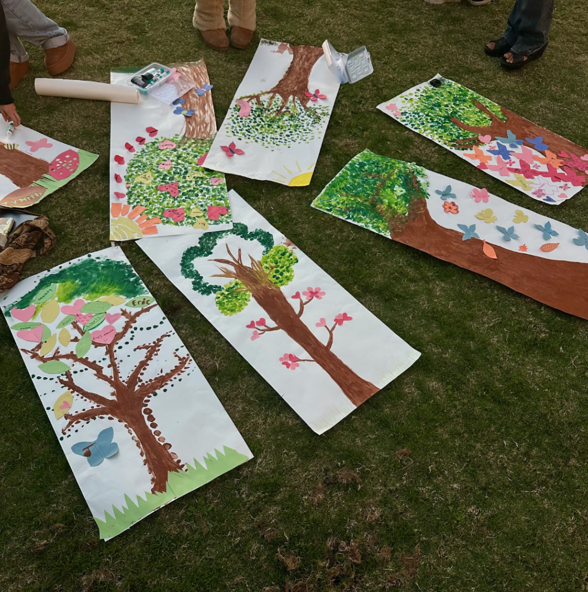
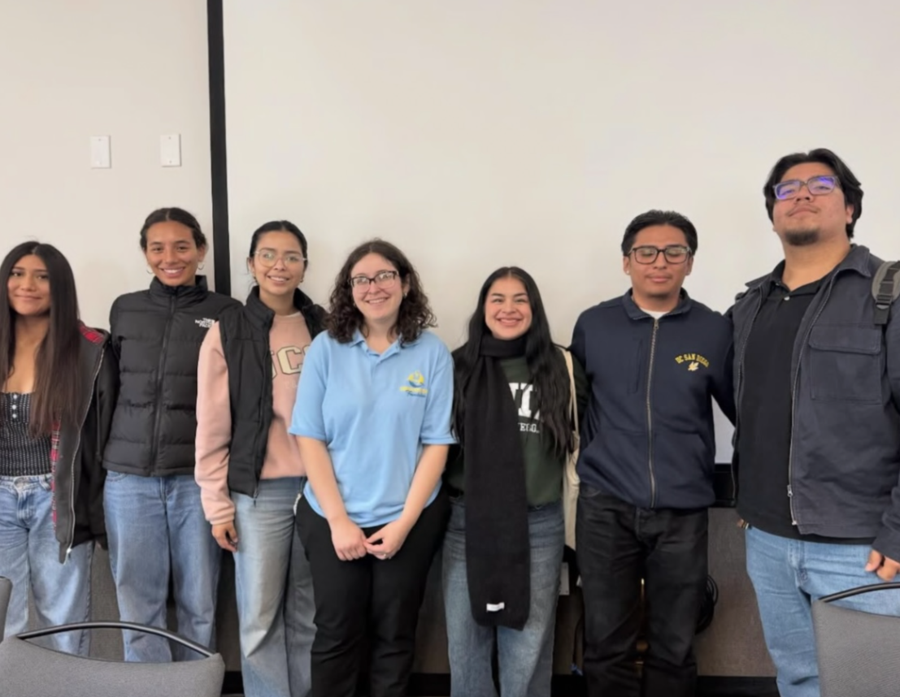
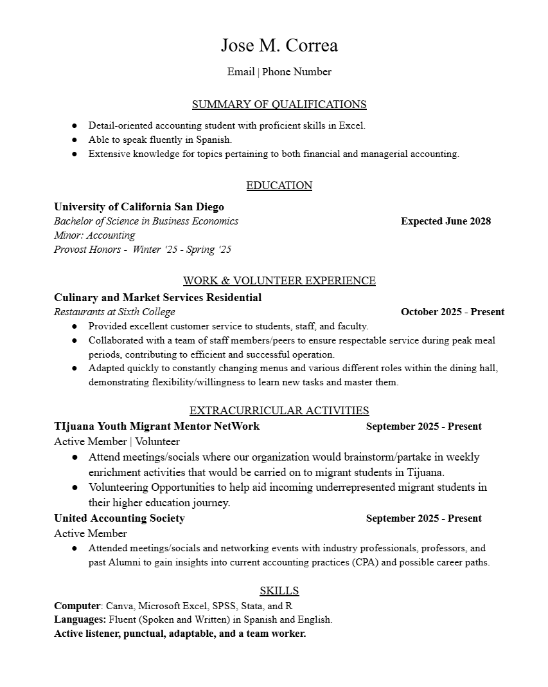

I'm a second year Business Economics major, Accounting minor, at University of California San DIego’s Rady School of Management, with career interests in becoming a certified public accountant. I am passionate about learning more about financial reporting, auditing, and understanding the rhythm behind the numbers. I’m dedicated, detail-oriented, and always looking for opportunities to learn new things, whether that’s through internships, coursework, or real-world experience that helps me get closer to my career goals.
As a Mexican-American son born to immigrant parents my mission is to honor my journey as a first-generation student by pursuing accounting with purpose, pride, and a commitment to excellence. I pride myself on serving as an example that everyone regardless of gender, race, or ethnicity has the opportunity to achieve their career goals.
Recently, I have been able to connect with my community and serve incoming first generation students as a mentor into the challenging journey of higher education. I volunteered with my organization TYMMN (Tijuana Youth Migrant Mentor Network) and Future U on the student board to answer questions regarding my journey as a college student and the difficulties I have faced, but most importantly how I resolved them. I find it is important to show my community resiliency and strength.
At TYMMN we attend meetings/socials where our organization brainstorms/partake in weekly enrichment activities that would be carried on to migrant students in Tijuana, such as painting, creating memorials, writting letters, etc. Through this organization I have been able to be apart of varioud volunteering ppportunities to help aid incoming underrepresented migrant students in their higher education journey.


Connect with me by pressing on my resume!
